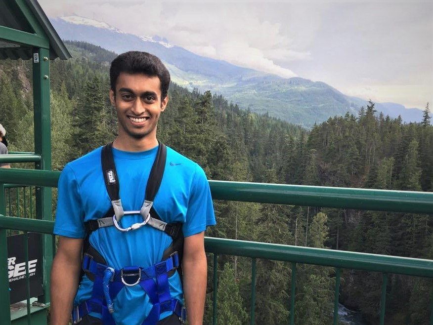

 Hi! I'm Francis. My goal in life is to build robots that can do pretty much all of the things that humans can (and some that we cannot). I'm motivated primarily by the idea of not having to do any chores.
I grew up in several different places across India, finished my schooling in Bangalore, joined BITS Pilani Goa for my undergrad, worked at the Robotics Research Centre, IIIT Hyderabad for a year, and then joined Oregon State as a Master's student in robotics. Over time, I got to build some cool robots, and have a lot of fun.
While I think the application of some academic rigor is important, I also believe that elegant theory does not always get things done and robots in the real world have to resort to tricks and hacks to function well.
I also like reading, watching movies, Cuban salsa and biking. I like to think of myself as a decent chef too, but mileage may vary depending on who shows up for dinner.
I can be contacted at jamesf at oregonstate dot edu.